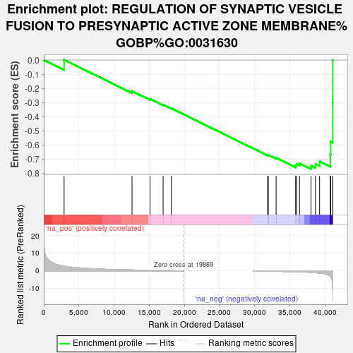
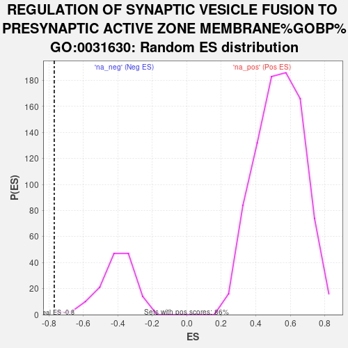

| | | Dataset | DS_vs_CTR_ranked_genelist |
| Phenotype | NoPhenotypeAvailable |
| Upregulated in class | na_neg |
| GeneSet | REGULATION OF SYNAPTIC VESICLE FUSION TO PRESYNAPTIC ACTIVE ZONE MEMBRANE%GOBP%GO:0031630 |
| Enrichment Score (ES) | -0.7680745 |
| Normalized Enrichment Score (NES) | -1.8670206 |
| Nominal p-value | 0.006993007 |
| FDR q-value | 0.04435212 |
| FWER p-Value | 0.571 |
Table: GSEA Results Summary

Fig 1: Enrichment plot: REGULATION OF SYNAPTIC VESICLE FUSION TO PRESYNAPTIC ACTIVE ZONE MEMBRANE%GOBP%GO:0031630
Profile of the Running ES Score & Positions of GeneSet Members on the Rank Ordered List
| SYMBOL | RANK IN GENE LIST | RANK METRIC SCORE | RUNNING ES | CORE ENRICHMENT | | 1 | CPLX3 | 2891 | 2.729 | 0.0015 | No |
| 2 | SYT4 | 12551 | 0.532 | -0.2196 | No |
| 3 | DOC2A | 15113 | 0.314 | -0.2736 | No |
| 4 | DOC2B | 16974 | 0.165 | -0.3145 | No |
| 5 | SYT11 | 18141 | 0.093 | -0.3404 | No |
| 6 | SYT8 | 31833 | -0.130 | -0.6701 | No |
| 7 | STXBP1 | 31935 | -0.138 | -0.6690 | No |
| 8 | SYT1 | 33043 | -0.226 | -0.6900 | No |
| 9 | SYT7 | 35821 | -0.504 | -0.7442 | No |
| 10 | SYT13 | 35942 | -0.524 | -0.7334 | No |
| 11 | CPLX4 | 36372 | -0.592 | -0.7282 | No |
| 12 | RAB3A | 38010 | -0.849 | -0.7457 | Yes |
| 13 | SYT2 | 38630 | -1.042 | -0.7333 | Yes |
| 14 | RPH3AL | 39225 | -1.253 | -0.7148 | Yes |
| 15 | SYT5 | 40756 | -3.254 | -0.6664 | Yes |
| 16 | CPLX2 | 40808 | -3.508 | -0.5753 | Yes |
| 17 | CPLX1 | 41105 | -10.762 | -0.2993 | Yes |
| 18 | RPH3A | 41108 | -11.385 | 0.0002 | Yes |
Table: GSEA details [plain text format]

Fig 2: REGULATION OF SYNAPTIC VESICLE FUSION TO PRESYNAPTIC ACTIVE ZONE MEMBRANE%GOBP%GO:0031630: Random ES distribution
Gene set null distribution of ES for REGULATION OF SYNAPTIC VESICLE FUSION TO PRESYNAPTIC ACTIVE ZONE MEMBRANE%GOBP%GO:0031630